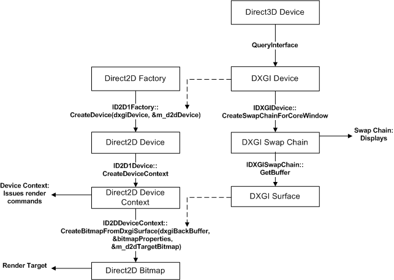

title: How to render by using a Direct2D device context description: In this topic you will learn about creating Direct2D \ 32;device context in Windows 8. ms.assetid: D4563FEA-767E-4B16-8F3C-3D548A64B206 keywords:
In this topic you will learn about creating Direct2D device context in Windows 8. This information applies to you if you are developing Windows Store apps or a desktop app by using Direct2D. This topic describes the purpose of Direct2D device context objects, how to create that object , and a step by step guide about rendering and displaying Direct2D primitives and images. You will also learn about switching render targets and adding effects to your app.
You need a Direct2D device and a Direct3D device to create a Direct2D device context. A Direct2D device (exposes an ID2D1Device interface pointer) represents a display adapter. A Direct3D device (exposes an ID3D11Device interface pointer) is associated with a Direct2D device. Each app must have one Direct2D device, but can have more than one device.
A Direct2D device context (exposes an ID2D1DeviceContext interface pointer) represents a set of state and command buffers that you use to render to a target. You can call methods on the device context to set pipeline state and generate rendering commands by using the resources owned by a device.
On Windows 7 and earlier, you use a ID2D1HwndRenderTarget or another render target interface to render to a window or surface. Starting with Windows 8, we do not recommend rendering by using methods that rely on interfaces like ID2D1HwndRenderTarget because they won't work with Windows Store apps. You can use a device context to render to an Hwnd if you want to make a desktop app and still take advantage of the device context's additional features. However, the device context is required to render content in a Windows Store apps with Direct2D.
The code here shows you how to create a Direct3D11 device, get the associated DXGI device, create a Direct2D device, and then finally create the Direct2D device context for rendering.
Here is a diagram of the method calls and the interfaces this code uses.

[!Note]
This code assumes you already have an ID2D1Factory1 object, for more information see the ID2D1Factory reference page.
Â
// This flag adds support for surfaces with a different color channel ordering than the API default.
// You need it for compatibility with Direct2D.
UINT creationFlags = D3D11_CREATE_DEVICE_BGRA_SUPPORT;
// This array defines the set of DirectX hardware feature levels this app supports.
// The ordering is important and you should preserve it.
// Don't forget to declare your app's minimum required feature level in its
// description. All apps are assumed to support 9.1 unless otherwise stated.
D3D_FEATURE_LEVEL featureLevels[] =
{
D3D_FEATURE_LEVEL_11_1,
D3D_FEATURE_LEVEL_11_0,
D3D_FEATURE_LEVEL_10_1,
D3D_FEATURE_LEVEL_10_0,
D3D_FEATURE_LEVEL_9_3,
D3D_FEATURE_LEVEL_9_2,
D3D_FEATURE_LEVEL_9_1
};
// Create the DX11 API device object, and get a corresponding context.
ComPtr<ID3D11Device> device;
ComPtr<ID3D11DeviceContext> context;
DX::ThrowIfFailed(
D3D11CreateDevice(
nullptr, // specify null to use the default adapter
D3D_DRIVER_TYPE_HARDWARE,
0,
creationFlags, // optionally set debug and Direct2D compatibility flags
featureLevels, // list of feature levels this app can support
ARRAYSIZE(featureLevels), // number of possible feature levels
D3D11_SDK_VERSION,
&device, // returns the Direct3D device created
&m_featureLevel, // returns feature level of device created
&context // returns the device immediate context
)
);
ComPtr<IDXGIDevice> dxgiDevice;
// Obtain the underlying DXGI device of the Direct3D11 device.
DX::ThrowIfFailed(
device.As(&dxgiDevice)
);
// Obtain the Direct2D device for 2-D rendering.
DX::ThrowIfFailed(
m_d2dFactory->CreateDevice(dxgiDevice.Get(), &m_d2dDevice)
);
// Get Direct2D device's corresponding device context object.
DX::ThrowIfFailed(
m_d2dDevice->CreateDeviceContext(
D2D1_DEVICE_CONTEXT_OPTIONS_NONE,
&m_d2dContext
)
);
Let's walk through the steps in the preceding code sample.
Get an ID3D11Device interface pointer you will need this to create the device context.
Declare the creation flags to set up the Direct3D device for BGRA support. Direct2D requires BGRA color order.
Declare an array of D3D_FEATURE_LEVEL entries representing the set of feature levels that your app will support.
[!Note]
Direct3D searches your list until it finds the feature level supported by the host system.
Â
Use the D3D11CreateDevice function to create an ID3D11Device object, the function will also return an ID3D11DeviceContext object, but that object is not needed for this example.
Query the Direct3D 11 device for its DXGI Device interface.
Create an ID2D1Device object by calling the ID2D1Factory::CreateDevice method and passing in the IDXGIDevice object.
Create an ID2D1DeviceContext pointer using the ID2D1Device::CreateDeviceContext method.
The code here shows you how to get the 2 dimensional Direct3D texture for the window back buffer and create a bitmap target that links to this texture to which the Direct2D device context renders.
// Allocate a descriptor.
DXGI_SWAP_CHAIN_DESC1 swapChainDesc = {0};
swapChainDesc.Width = 0; // use automatic sizing
swapChainDesc.Height = 0;
swapChainDesc.Format = DXGI_FORMAT_B8G8R8A8_UNORM; // this is the most common swapchain format
swapChainDesc.Stereo = false;
swapChainDesc.SampleDesc.Count = 1; // don't use multi-sampling
swapChainDesc.SampleDesc.Quality = 0;
swapChainDesc.BufferUsage = DXGI_USAGE_RENDER_TARGET_OUTPUT;
swapChainDesc.BufferCount = 2; // use double buffering to enable flip
swapChainDesc.Scaling = DXGI_SCALING_NONE;
swapChainDesc.SwapEffect = DXGI_SWAP_EFFECT_FLIP_SEQUENTIAL; // all apps must use this SwapEffect
swapChainDesc.Flags = 0;
// Identify the physical adapter (GPU or card) this device is runs on.
ComPtr<IDXGIAdapter> dxgiAdapter;
DX::ThrowIfFailed(
dxgiDevice->GetAdapter(&dxgiAdapter)
);
// Get the factory object that created the DXGI device.
ComPtr<IDXGIFactory2> dxgiFactory;
DX::ThrowIfFailed(
dxgiAdapter->GetParent(IID_PPV_ARGS(&dxgiFactory))
);
// Get the final swap chain for this window from the DXGI factory.
DX::ThrowIfFailed(
dxgiFactory->CreateSwapChainForCoreWindow(
device.Get(),
reinterpret_cast<IUnknown*>(m_window),
&swapChainDesc,
nullptr, // allow on all displays
&m_swapChain
)
);
// Ensure that DXGI doesn't queue more than one frame at a time.
DX::ThrowIfFailed(
dxgiDevice->SetMaximumFrameLatency(1)
);
// Get the backbuffer for this window which is be the final 3D render target.
ComPtr<ID3D11Texture2D> backBuffer;
DX::ThrowIfFailed(
m_swapChain->GetBuffer(0, IID_PPV_ARGS(&backBuffer))
);
// Now we set up the Direct2D render target bitmap linked to the swapchain.
// Whenever we render to this bitmap, it is directly rendered to the
// swap chain associated with the window.
D2D1_BITMAP_PROPERTIES1 bitmapProperties =
BitmapProperties1(
D2D1_BITMAP_OPTIONS_TARGET | D2D1_BITMAP_OPTIONS_CANNOT_DRAW,
PixelFormat(DXGI_FORMAT_B8G8R8A8_UNORM, D2D1_ALPHA_MODE_IGNORE),
m_dpi,
m_dpi
);
// Direct2D needs the dxgi version of the backbuffer surface pointer.
ComPtr<IDXGISurface> dxgiBackBuffer;
DX::ThrowIfFailed(
m_swapChain->GetBuffer(0, IID_PPV_ARGS(&dxgiBackBuffer))
);
// Get a D2D surface from the DXGI back buffer to use as the D2D render target.
DX::ThrowIfFailed(
m_d2dContext->CreateBitmapFromDxgiSurface(
dxgiBackBuffer.Get(),
&bitmapProperties,
&m_d2dTargetBitmap
)
);
// Now we can set the Direct2D render target.
m_d2dContext->SetTarget(m_d2dTargetBitmap.Get());
Let's walk through the steps in the preceding code example.
Allocate a DXGI_SWAP_CHAIN_DESC1 structure and define the settings for the swap chain.
These settings show an example of how to create a swap chain that a Windows Store app can use.
Get the adapter that the Direct3D device and the DXGI Device are running on and get the IDXGIFactory object associated with them. You must use this DXGI factory to ensure the swap chain is created on the same adapter.
Call the IDXGIFactory2::CreateSwapChainForCoreWindow method to create the swap chain. Use the Windows::UI::CoreWindow class for the main window of a Windows Store app.
Make sure to set the maximum frame latency to 1 to minimize power consumption.
If you want to render Direct2D content in a Windows Store app, see the CreateSwapChainForComposition method.
Get the back buffer from the swap chain. The back buffer exposes an ID3D11Texture2D interface allocated by the swap chain
Declare a D2D1_BITMAP_PROPERTIES1 struct and set the property values. Set the pixel format to BGRA because this is the format the Direct3D device and the DXGI Device use.
Get the back buffer as an IDXGISurface to pass to Direct2D. Direct2D doesn't accept an ID3D11Texture2D directly.
Create a ID2D1Bitmap object from the back buffer using the ID2D1DeviceContext::CreateBitmapFromDxgiSurface method.
Now the Direct2D bitmap is linked to the back buffer. Set the target on the Direct2D device context to the bitmap.
Now that you have a target bitmap, you can draw primitives, images, image effects, and text to it using the Direct2D device context. The code here shows you how to draw a rectangle.
ComPtr<ID2D1SolidColorBrush> pBlackBrush;
DX::ThrowIfFailed(
m_d2dContext->CreateSolidColorBrush(
D2D1::ColorF(D2D1::ColorF::Black),
&pBlackBrush
)
);
m_d2dContext->BeginDraw();
m_d2dContext->DrawRectangle(
D2D1::RectF(
rc.left + 100.0f,
rc.top + 100.0f,
rc.right - 100.0f,
rc.bottom - 100.0f),
pBlackBrush);
DX::ThrowIfFailed(
m_d2dContext->EndDraw()
);
DX::ThrowIfFailed(
m_swapChain->Present1(1, 0, ¶meters);
);
Let's walk through the steps in the preceding code example.
Now you can use the Direct2D device context draw primitives, images, image effects, and text to the screen.
Â
Â